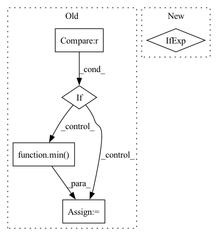

Pattern ID :28751
Before Change
raise ValueError("No Id is not supported any more.")
The first frame is assumed to be 0. If it"s negative go to the lowest negative.
if frame_ix.numel() != 0 :
ix_f = min( 0, frame_ix.min())
if self.num_emitter != 0:
grand_matrix_list = torch_cpp.split_tensor(grand_matrix, frame_ix, ix_f, ix_l)
After Change
The first frame is assumed to be 0. If it"s negative go to the lowest negative.
if self.num_emitter != 0:
ix_low_ = ix_low if ix_low is not None else frame_ix.min()
ix_up_ = ix_up if ix_up is not None else frame_ix.max()
grand_matrix_list = torch_cpp.split_tensor(grand_matrix, frame_ix, ix_low_, ix_up_)
In pattern: SUPERPATTERN
Frequency: 3
Non-data size: 5
Instances Fragment ID: 84656794
Project Name: turagalab/decode
Commit Name: ec0a450a970493ee8764672f59d1e8e8e14b69a7
Time: 2019-04-26
Author: gitdev@LRM.photo
File Name: deepsmlm/generic/emitter.py
M Class Name: EmitterSet
N Class Name: EmitterSet
M Method Name: split_in_frames(3)
N Method Name: split_in_frames(3)
M Parent Class:
N Parent Class:
M File Name: deepsmlm/generic/emitter.py
N File Name: deepsmlm/generic/emitter.py
M Start Line: 74
M End Line: 110
N Start Line: 101
N End Line: 133
Before Change
runs with success, but needs further validation and possibly optimization for lower runtime impact.
if drop_prob == 0. or not training:
return x
_, _, height, width = x.shape
total_size = width * height
clipped_block_size = min(block_size, min( width, height) )
// seed_drop_rate, the gamma parameter
seed_drop_rate = gamma_scale * drop_prob * total_size / clipped_block_size ** 2 / (
(width - block_size + 1) *After Change
padding=clipped_block_size // 2)
if with_noise:
normal_noise = torch.randn((1, C, H, W), dtype=x.dtype, device=x.device) if batchwise else torch.randn_like(x)
if inplace:
x.mul_(block_mask).add_(normal_noise * (1 - block_mask))
else: Fragment ID: 84656799
Project Name: feng-lab/pytorch-image-models
Commit Name: 1904ed8fecdb3f37818378421350315d2abf1224
Time: 2020-05-13
Author: rwightman@gmail.com
File Name: timm/models/layers/drop.py
M Class Name: AnonimousClass
N Class Name: AnonimousClass
M Method Name: drop_block_2d(7)
N Method Name: drop_block_2d(6)
M Parent Class:
N Parent Class:
M File Name: timm/models/layers/drop.py
N File Name: timm/models/layers/drop.py
M Start Line: 25
M End Line: 62
N Start Line: 26
N End Line: 69
Before Change
for i in range(batch_size):
j = gt_select_units_num[i]
if j < select_size :
nums = min( units_size - 1, entity_nums[i].item())
nums = torch.tensor(nums, dtype=entity_nums.dtype, device=entity_nums.device)
gt_units[i, j] = L.tensor_one_hot(nums, units_size).long()
After Change
token = torch.tensor(AHP.max_entities - 1, dtype=padding.dtype, device=padding.device)
padding[:, 0] = L.tensor_one_hot(token, units_size).reshape(-1)
gt_units = torch.cat([gt_units, padding], dim=1)
print("gt_units", gt_units) if debug else None
print("gt_units.shape", gt_units.shape) if debug else None
gt_units[torch.arange(batch_size), gt_select_units_num] = L.tensor_one_hot(entity_nums, units_size).long()
Fragment ID: 84656803
Project Name: liuruoze/mini-alphastar
Commit Name: 915eac43e5d4020880519d5c9094dc622a9acdfb
Time: 2021-12-15
Author: liuruoze@163.com
File Name: alphastarmini/core/arch/arch_model.py
M Class Name: ArchModel
N Class Name: ArchModel
M Method Name: sl_forward(9)
N Method Name: sl_forward(9)
M Parent Class: nn.Module
N Parent Class: nn.Module
M File Name: alphastarmini/core/arch/arch_model.py
N File Name: alphastarmini/core/arch/arch_model.py
M Start Line: 188
M End Line: 204
N Start Line: 188
N End Line: 212